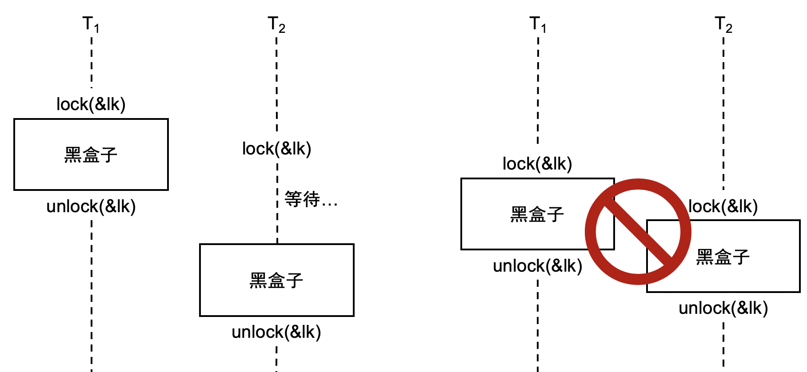
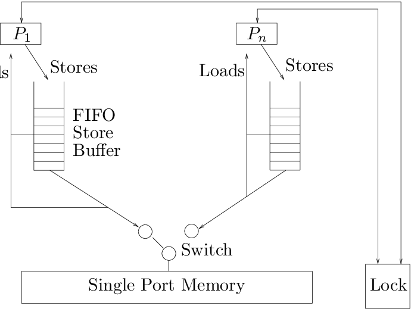
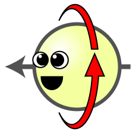
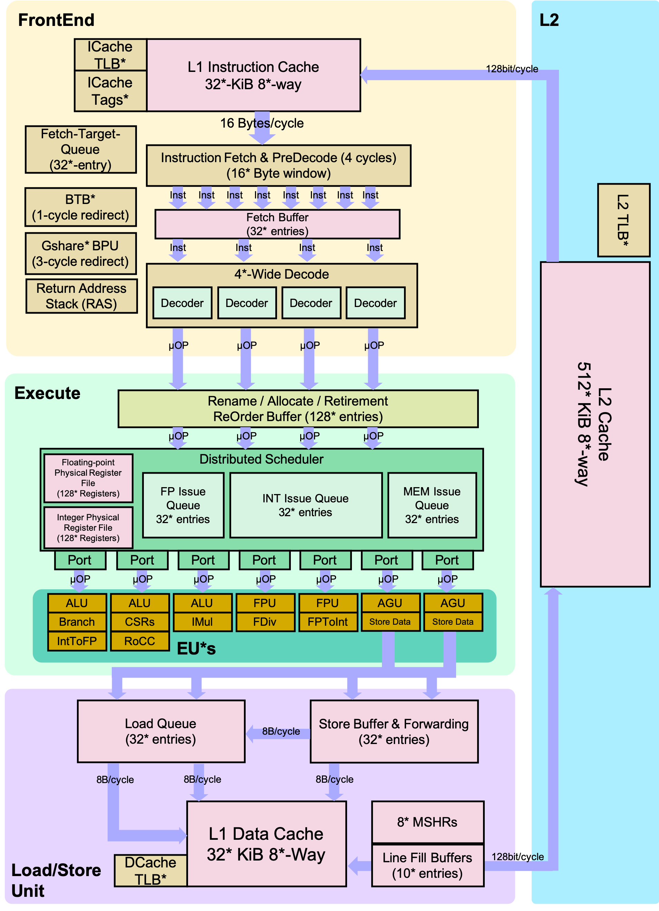
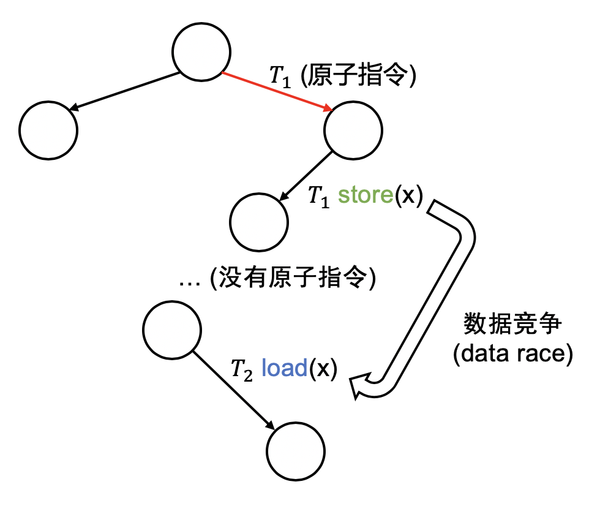

<html>
  <Head>
<meta http-equiv="Content-Type" content="text/html; charset=utf-8">

    
    

    <link rel="stylesheet" href="../static/css/fonts/crmison.css"/>
    <link rel="stylesheet" href="../static/css/fonts/fira_code.css"/>
    <link rel="stylesheet" href="../static/css/fonts/ptsans.css"/>
    <link rel="stylesheet" href="../static/css/katex.min.css"/>
    <link rel="stylesheet" href="../static/css/wiki.css"/>
    <link rel="stylesheet" href="../static/css/codehilite.css"/>

    <script src="../static/js/jquery.min.js"></script>
    <script src="../static/js/bootstrap.bundle.min.js"></script>
    <script src="../static/js/katex.min.js"></script>
    
<link rel="stylesheet" href="../static/css/reveal.css"/>
<link rel="stylesheet" href="../static/css/reveal-slides.css"/>


    <title>并发控制 (1)：互斥</title>
  </Head>
  <body>
   
   

<div class="reveal">
  <div class="slides">
    <section>
<div class="slide-container"><div class="center middle"><h1 id="1">并发控制 (1)：互斥</h1>
<div plugin="include(page='Slides_Author')"><div class="hidden-in-outline author-block author-affiliation">
<p><a href="http://ics.nju.edu.cn/~jyy">蒋炎岩</a></p>
</div>
<div class="row hidden-in-outline author-block justify-content-md-center">
<p><div class="author-affiliation">    <a href="http://www.nju.edu.cn/"><p>南京大学</p>    </img></a>
  </div>
  <div class="author-affiliation">
   <a href="http://cs.nju.edu.cn/"><p>计算机科学与技术系</p>
    </img></a>
  </div>
  <div class="author-affiliation">
    <a href="http://moon.nju.edu.cn/"><p>计算机软件研究所</p>
    </img></a>
  </div></p>
</div></div></div></div>
</section>

<section>
<div class="slide-container"><div class=""><h2 id="_1">本讲概述</h2>
<blockquote>
<p>上次课给大家介绍了基础工具：“程序 = 状态机 = 有向图”</p>
<ul>
<li>讲解了 Peterson 算法的 (简化的) 正确性证明</li>
</ul>
<p>Peterson 算法只能实现两个线程的互斥</p>
<ul>
<li>如何正确实现多处理器上的互斥？</li>
</ul>
</blockquote>
<p>本讲内容</p>
<ul>
<li>互斥问题</li>
<li>共享内存上的互斥</li>
<li>原子指令与互斥</li>
<li>数据竞争</li>
</ul></div></div>
</section>

<section>
<section>
<div class="slide-container"><div class="center middle"><h1 id="_1">互斥问题</h1></div></div>
</section>
<section>
<div class="slide-container"><div class=""><h2 id="_1">互斥：直观理解</h2>
<p>理解并发的另一个工具：<span class="red">把线程想象成人、把共享内存想象成物理世界</span></p>
<ul>
<li>物理世界是天生并发的，在小范围宏观意义上，所有部分的空间 “同时” 沿着时间方向前进)<ul>
<li>物理世界 = 共享内存</li>
<li>我们 (根据想法执行物理世界动作) = 线程 (根据程序局部状态访问共享状态)</li>
</ul>
</li>
</ul></div></div>
</section>
<section>
<div class="slide-container"><div class=""><h2 id="_1">互斥：直观理解</h2>
<p>线程 (我) 想<span class="red">不被别人打断地</span>做一件事</p>
<ul>
<li>一旦某个人已经开始，其他人就必须等待</li>
</ul>
<p></img></p>
<p><span class="center">“躲进厕所锁上门，我就把全世界人锁在了厕所外面”</span></p></div></div>
</section>
<section>
<div class="slide-container"><div class=""><h2 id="_1">共享内存上的互斥：问题定义</h2>
<p>互斥 (mutual exclusion)，“互相排斥”</p>
<ul>
<li>实现 <code>lock_t</code> 数据结构和 <code>lock/unlock</code> API:</li>
</ul>
<pre class="codehilite"><code class="language-c">typedef struct {
  ...
} spinlock_t;
void lock(spinlock_t *lk);   // 试图获得锁的独占访问，成功获得后返回
void unlock(spinlock_t *lk); // 释放锁的独占访问</code></pre>

<hr></hr>
<p>一把 “排他性” 的锁——对于锁对象 <code>lk</code></p>
<ul>
<li>在任何线程调度 (线程执行的顺序) 下<ul>
<li>若某个线程持有锁 (<code>lock(lk)</code> 返回且未释放)</li>
<li>则任何其他线程的 <code>lock(lk)</code> 都不能返回 </li>
</ul>
</li>
</ul>
<p>状态机的视角</p>
<ul>
<li><code>lock</code> 返回会进入 “locked” 状态; <code>unlock</code> 会清除该状态</li>
<li>初始状态 <math class="inline-math">s_0</math> 不能到达两个线程都进入 locked 的状态 </li>
</ul></div></div>
</section>
<section>
<div class="slide-container"><div class=""><h2 id="_1">互斥：阻止并发的发生</h2>
<p>在共享内存上，共享资源的访问太危险 (原子性、顺序、可见性的丧失)，互斥用来阻止代码块之间的并发，实现 “<span class="red">串行化</span>”</p>
<ul>
<li>lock/unlock 保护的区域成为一个<span class="red">原子</span>的黑盒子</li>
<li>黑盒子的代码不能随意并发，<span class="red">顺序</span>满足要么 <math class="inline-math">T_1 \to T_2</math>，要么 <math class="inline-math">T_2 \to T_1</math></li>
<li>且先完成的黑盒子的内存访问在之后的黑盒子中<span class="red">可见</span></li>
</ul>
<p></img></p></div></div>
</section>
</section>

<section>
<section>
<div class="slide-container"><div class="center middle"><h1 id="_1">共享内存上的互斥</h1></div></div>
</section>
<section>
<div class="slide-container"><div class=""><h2 id="_1">共享内存上的互斥</h2>
<p>共享内存多线程：独立的寄存器/堆栈；共享内存</p>
<p>支持的基本操作</p>
<ul>
<li>线程本地 (thread-local) 计算 (寄存器/堆栈上数值的读写/修改)</li>
<li>load，读共享内存</li>
<li>store，写共享内存</li>
<li>假设 load/store 是原子的<ul>
<li>状态机每次执行一条 load/store</li>
</ul>
</li>
</ul>
<hr></hr>
<p>困难之处在于：<span class="red">不能同时读/写共享内存</span></p>
<ul>
<li>load (环顾四周) 的时候不能写，只能 “干看”</li>
<li>store (改变物理世界状态) 的时候不能读，只能 “闭着眼睛动手”</li>
<li>所以才有 Peterson 等非常 “巧妙” 的算法<ul>
<li><del>一点也不像 system 的解决方案：简单、粗暴 (稳定)、有效</del></li>
</ul>
</li>
</ul></div></div>
</section>
<section>
<div class="slide-container"><div class=""><h2 id="peterson">Peterson 算法的真正问题</h2>
<pre class="codehilite"><code class="language-c">int x = 0, y = 0;

void thread_1() {
  [1] store(x, 1); // 处理器允许 1-2 “交换”
  [2] t = load(y);
  [3] printf("y = %d\n", t);
}

void thread_2() {
  [1] store(y, 1); // 处理器允许 1-2 “交换”
  [2] t = load(x);
  [3] printf("x = %d\n", t);
}</code></pre>


<hr></hr>
<p>实验结果 (4 x Xeon X7460, 24-cores)</p>
<p><span class="float-right"></img> </span>
<table>
<thead>
<tr>
<th>打印的 x</th>
<th>打印的 y</th>
<th>概率</th>
<th>可能的调度</th>
</tr>
</thead>
<tbody>
<tr>
<td>0</td>
<td>0</td>
<td><font color="red">0.2%</font></td>
<td>弱内存一致性</td>
</tr>
<tr>
<td>0</td>
<td>1</td>
<td>82.3%</td>
<td>3 → 4 → 1 → 2</td>
</tr>
<tr>
<td>1</td>
<td>0</td>
<td>17.5%</td>
<td>1 → 2 → 3 → 4</td>
</tr>
<tr>
<td>1</td>
<td>1</td>
<td><font color="red">0.0%</font></td>
<td>1 → 3 → 2 → 4</td>
</tr>
</tbody>
</table></p></div></div>
</section>
<section>
<div class="slide-container"><div class=""><h2 id="peterson-contd">Peterson 算法的真正问题 (cont'd)</h2>
<pre class="codehilite"><code class="language-c">int turn = T1, x = 0, y = 0;

void thread1() {
  [1] store(x,    1);  // 举起 T1 的旗子
  [2] store(turn, T2); // 在牌子上礼貌地写上对方的名字 (T2)
spin:
  [3] t1 = load(y);    // !!! x, y, turn 是不同的变量 !!!
  [4] if (!t1)      goto critical_section;  // 如果对方没有举起旗子
  [5] t2 = load(turn);
  [6] if (t2 != T2) goto critical_section;  // 或者牌子上写着自己 (T1)
  [7] goto spin;
critical_section:
  ...

void thread2() {
  [1] store(y,    1);  // 举起 T2 的旗子
  [2] store(turn, T1); // 在牌子上写上 T1
spin:
  [3] t1 = load(x);
  [4] if (!t1)      goto critical_section;  // 如果对方没有举起旗子
  [5] t2 = load(turn);
  [6] if (t2 != T1) goto critical_section;  // 或者牌子上写着自己 (T2)
  [7] goto spin;
critical_section:
  ...</code></pre></div></div>
</section>
<section>
<div class="slide-container"><div class=""><h2 id="_1">共享内存带来的更多问题……</h2>
<p><a href="../static/wiki/os/2020/demos/sum.c"><code>sum.c</code></a>，多线程求 <math>1+1+\ldots+1</math></p>
<ul>
<li>使用一条指令完成 <code>sum++</code><ul>
<li><code>48 83 05 xx xx xx xx 01</code>: <code>addq $0x1,xxx(%rip)</code></li>
</ul>
</li>
</ul>
<div class="fragment">
<ul>
<li>运行结果<ul>
<li><code>sum = 12615418</code><ul>
<li>假设指令执行是原子不可分割的，那么 <code>sum</code> 应该完全正确才对</li>
</ul>
</li>
<li><p><code>sum = 9894505</code></p>
<ul>
<li>反直觉？一条 <code>add</code> 可以看成 <code>t = load(x); t++; store(x, t)</code></li>
<li>(20 行) <a href="../static/wiki/os/2020/demos/trivial-model-checker.py">trivial-model-checker.py</a></li>
</ul>
<p></img></p>
</li>
</ul>
</li>
</ul>
</div></div></div>
</section>
<section>
<div class="slide-container"><div class=""><h2 id="x86">x86 处理器的共享内存模型</h2>
<p></img></p>
<p>Further reading: <a href="https://cacm.acm.org/magazines/2010/7/95048-x86-tso-a-rigorous-and-usable-programmers-model-for-x86-multiprocessors/fulltext">x86-TSO: A rigorous and ­usable programmer's model for x86 multiprocessors</a></p>
<ul>
<li>乱序执行使单线程程序执行得更快；同时也让并行程序的行为更难理解</li>
</ul></div></div>
</section>
<section>
<div class="slide-container"><div class=""><h2 id="_1">实现互斥的真正困难</h2>
<p>共享内存的行为经常出乎我们的意料</p>
<ul>
<li><span class="red">“状态机每一步选择一个线程执行一条指令” 是错误的假设</span></li>
<li>不经意的编译器/处理器乱序</li>
<li>看起来 “原子” (不可分割) 的一条指令并不原子</li>
</ul>
<blockquote>
<p>For some reason, developing locks that work without special hardware support became all the rage for a while, giving theory-types a lot of problems to work on. Of course, this line of work became quite useless when people realized it is much easier to assume a little hardware support (and indeed that support had been around from the earliest days of multiprocessing). Further, algorithms like the ones above don’t work on modern hardware (due to relaxed memory consistency models), thus making them even less useful than they were before. Yet more research relegated to the dustbin of history...</p>
</blockquote></div></div>
</section>
</section>

<section>
<section>
<div class="slide-container"><div class="center middle"><h1 id="_1">实现互斥：软件不够，硬件来凑</h1></div></div>
</section>
<section>
<div class="slide-container"><div class=""><h2 id="_1">回顾：在共享内存上实现互斥的本质困难</h2>
<ol>
<li>load (环顾四周) 的时候不能写，只能 “干看”</li>
<li>store (改变物理世界状态) 的时候不能读，只能 “闭着眼睛动手”</li>
<li>(现代多处理器) load/store 可能在执行时被乱序</li>
</ol>
<p>例子：用一个变量 <code>locked</code> 实现互斥</p>
<pre class="codehilite"><code class="language-c">void critical_section() {
     while (1)
[1]    if (!locked) {
[2]      locked = 1;
[3]      break;
       }
     // 进入临界区
[4]    locked = 0;
}</code></pre>

<ul>
<li>用状态机模型分析：<math class="inline-math">T_1 \to T_2</math> 或 <math class="inline-math">T_2 \to T_1</math> 会同时进入临界区</li>
</ul></div></div>
</section>
<section>
<div class="slide-container"><div class=""><h2 id="load-store">如果能不被打断地同时 load + store……</h2>
<p>在初始状态，如果执行 <math class="inline-math">T_1 \to T_1</math> 或 <math class="inline-math">T_2 \to T_2</math>，就可以正确实现互斥</p>
<ul>
<li><p>即实现互斥只需要能<span class="red">同时完成</span></p>
<ul>
<li><code>t = load(locked)</code></li>
<li><code>if (t == 0) store(locked, 1)</code></li>
</ul>
</li>
<li><p>那就在硬件上添加一条指令实现这个功能，就好了？</p>
<ul>
<li>上面的指令称为 “test-and-set”</li>
</ul>
</li>
</ul></div></div>
</section>
<section>
<div class="slide-container"><div class=""><h2 id="_1">原子指令 (操作)</h2>
<p>一条不可分割的指令，完成：</p>
<ul>
<li>一次共享内存的 load</li>
<li>向同一个共享内存地址的 store</li>
<li>以及一些线程 (处理器) 本地的计算</li>
</ul>
<hr></hr>
<p>在多处理器上，原子操作保证：</p>
<ul>
<li><span class="red">原子性</span>: load/store 不会被打断</li>
<li><span class="red">顺序</span>：线程 (处理器) 执行的乱序只能不能越过原子操作</li>
<li><span class="red">多处理器之间的可见性</span>：若原子操作 <math class="inline-math">A</math> 发生在 <math class="inline-math">B</math> 之前，则 <math class="inline-math">A</math> 之前的 store 对 <math class="inline-math">B</math> 之后的 load 可见</li>
</ul></div></div>
</section>
<section>
<div class="slide-container"><div class=""><h2 id="x86-lock">x86 原子操作：<code>LOCK</code> 指令前缀</h2>
<p>例子：<a href="../static/wiki/os/2020/demos/sum-atomic.c"><code>sum-atomic.c</code></a></p>
<ul>
<li><span class="red"><code>f0</code></span> <code>48 83 05 xx xx xx xx 01</code>: <code>lock addq $0x1,xxx(%rip)</code><ul>
<li><code>sum = 40000000</code></li>
</ul>
</li>
</ul></div></div>
</section>
<section>
<div class="slide-container"><div class=""><h2 id="x86-xchg">x86 原子操作：<code>xchg</code></h2>
<pre class="codehilite"><code class="language-c">int xchg(volatile int *addr, int newval) {
  int result;
  asm volatile ("lock xchg %0, %1"
  : "+m"(*addr), // [%0] addr (内存；读写)
    "=a"(result) // [%1] result (%eax)
  : "1"(newval)  // [%1]
  : "cc");       // clobbers eflags
  return result;
}</code></pre>


<p>思考题：如何用 <code>xchg</code> 实现 <code>lock</code>/<code>unlock</code>？</p>
<ul>
<li>把线程想象成人</li>
<li>把共享内存想象成物理空间<ul>
<li><code>xchg</code>: 瞬间完成、不被打断的飞龙探云手，并且能留下探过的证据</li>
</ul>
</li>
</ul></div></div>
</section>
<section>
<div class="slide-container"><div class=""><h2 id="xchg"><code>xchg</code> 实现互斥</h2>
<p></img></p>
<p>如何协调宿舍若干位同学上厕所问题？</p>
<ul>
<li>在厕所门口放一个桌子 (共享变量)<ul>
<li>初始时，桌上是 🔑</li>
</ul>
</li>
<li>每个同学可以做一种操作<ul>
<li>拿字条 🔖  和桌上的物品交换，立即生效不被打断 (atomic-xchg)</li>
</ul>
</li>
</ul>
<hr></hr>
<p>实现互斥的协议</p>
<ul>
<li>想上厕所的同学，拿一张 🔖 字条和桌上的东西交换<ul>
<li>得到 🔑: 进入厕所</li>
<li>得到字条 🔖: 等待一会，然后再试，直到拿到 🔑 为止</li>
</ul>
</li>
<li>出厕所的同学<ul>
<li>将手上的 🔑 和桌上的物品 (🔖) 交换 (还钥匙)</li>
</ul>
</li>
</ul></div></div>
</section>
<section>
<div class="slide-container"><div class=""><p></img></p>
<h2 id="_1">实现互斥：自旋锁</h2>
<pre class="codehilite"><code class="language-c">int table = KEY;
void lock() {
  while (1) {
    int got = xchg(&table, NOTE);
    if (got == KEY) break;
  }
}
void unlock() {
  xchg(&table, KEY)
}</code></pre>
<div class="fragment">
<pre class="codehilite"><code class="language-c">int locked = 0;
void lock()   {
  while (xchg(&locked, 1)) ;
}

void unlock() {
  xchg(&locked, 0);
}</code></pre>


<ul>
<li>演示：<a href="../static/wiki/os/2020/demos/spinlock.c">spinlock.c</a></li>
</ul>
</div></div></div>
</section>
<section>
<div class="slide-container"><div class=""><h2 id="risc-v">RISC-V: 另一种原子操作的设计</h2>
<p>考虑原子操作：</p>
<ul>
<li>atomic test-and-set<ul>
<li><code>reg = load(x); if (reg == XX) { store(x, YY); }</code></li>
</ul>
</li>
<li>lock xchg<ul>
<li><code>reg = load(x); store(x, XX);</code></li>
</ul>
</li>
<li>lock add<ul>
<li><code>t = load(x); t++; store(x, t);</code></li>
</ul>
</li>
</ul>
<hr></hr>
<p>它们的本质都是：</p>
<ol>
<li>load(x)</li>
<li>设置处理器局部 (寄存器) 状态</li>
<li>store(x)</li>
</ol></div></div>
</section>
<section>
<div class="slide-container"><div class=""><h2 id="load-reservedstore-conditional-lrsc">Load-Reserved/Store-Conditional (LR/SC)</h2>
<p>Load Reserved</p>
<ol>
<li>完成 <code>load(x, v)</code></li>
<li>在处理器上标记内存 <code>x</code> 被 “reserved” (盯上你了)<ul>
<li>之后可以自由执行几乎任何线程本地的计算</li>
<li>但一旦其他处理器写入 <code>x</code>，或当前处理器发生中断/异常，reserved 的状态就失效</li>
</ul>
</li>
</ol>
<p>Store Conditional</p>
<ol>
<li>尝试完成 <code>store(x, v)</code><ul>
<li>如果 <code>x</code> 依然处于 “reserved” 状态<ul>
<li>store 成功，返回 0</li>
</ul>
</li>
<li>否则 store 失败 (包括 store 过程中 reserved 失效)，返回 1</li>
</ul>
</li>
</ol></div></div>
</section>
<section>
<div class="slide-container"><div class=""><h2 id="lrsc">LR/SC: 的道理</h2>
<p>只要 lr/sc 满足顺序/可见性/原子性，lr 到 sc 之间的区域就是原子的！</p>
<ul>
<li>用原子的 load/store 实现了一段代码的原子性 (精妙)<ul>
<li>偶尔会失败，提供 abort 机制</li>
</ul>
</li>
</ul>
<pre class="codehilite"><code class="language-c">void do_lrsc(){
     while (1) {
[1]    t = lr(x);
[2]    t = f1/f2(t); // 不同线程可以执行不同操作
[3]    if (sc(x, t) == SUCC) {
[4]      break;
       }
     }
}</code></pre>


<ul>
<li>状态机建模</li>
</ul></div></div>
</section>
<section>
<div class="slide-container"><div class=""><h2 id="cas-lrsc">CAS 的 LR/SC 实现</h2>
<pre class="codehilite"><code class="language-c">int cas(int *addr, int cmp_val, int new_val) {
  int old_val = *addr;
  if (old_val == cmp_val) {
    *addr = new_val;
    return 0;
  } else {
    return 1;
  }
}</code></pre>


<pre class="codehilite"><code class="language-text">cas:
  jlr.w t0, (a0)       # Load original value.
  bne   t0, a1, fail   # Doesn’t match, so fail.
  sc.w  t0, a2, (a0)   # Try to update.
  bnez  t0, cas        # Retry if store-conditional failed.
  li a0, 0             # Set return to success.
  jr ra                # Return.
fail:
  li a0, 1             # Set return to failure.
  jr ra                # Return</code></pre></div></div>
</section>
<section>
<div class="slide-container"><div class=""><h2 id="lrsc">LR/SC 的硬件实现</h2>
<p></img></p>
<p>BOOM (Berkeley Out-of-Order Processor)</p>
<ul>
<li><a href="https://github.com/riscv-boom/riscv-boom">riscv-boom</a><ul>
<li><a href="https://github.com/riscv-boom/riscv-boom/blob/master/src/main/scala/lsu/dcache.scala#L651"><code>riscv-boom/**/lsu/dcache.scala</code></a></li>
<li>感谢 yzh 扒出了代码和对代码的解释</li>
</ul>
</li>
</ul>
<hr></hr>
<p>什么是 “CPU 的实现”？</p>
<ul>
<li>CPU = 数字逻辑电路<ul>
<li>寄存器 + 组合逻辑</li>
</ul>
</li>
<li>硬件描述语言 (HDL, Hardware Description Language)<ul>
<li>Verilog HDL, VHDL, ...</li>
<li><a href="https://www.chisel-lang.org/">Chisel</a> (on Scala)</li>
</ul>
</li>
</ul></div></div>
</section>
<section>
<div class="slide-container"><div class=""><h2 id="lrsc-on-boom">LR/SC on BOOM</h2>
<pre class="codehilite"><code class="language-scala">// s2 == pipeline stage #2
val lrsc_count = RegInit(0.U(log2Ceil(lrscCycles).W))
val lrsc_valid = lrsc_count &gt; lrscBackoff.U
...
val s2_lrsc_addr_match = widthMap(
     w =&gt; lrsc_valid
  && lrsc_addr === (s2_req(w).addr &gt;&gt; blockOffBits) ) // req 地址匹配
...

// val memWidth = memIssueParam.issueWidth (parameters.scala)
for (w &lt;- 0 until memWidth) {
  when (s2_valid(w)                            &&
    s2_type === t_lsu                          &&
    !s2_hit(w)                                 && // not hit
    !(s2_has_permission(w) && s2_tag_match(w)) &&
    s2_lrsc_addr_match(w)                      && // 地址匹配
    !s2_nack(w)) {
    lrsc_count := 0.U
  }
}</code></pre></div></div>
</section>
</section>

<section>
<section>
<div class="slide-container"><div class="center middle"><h1 id="data-race">数据竞争 (Data Race)</h1>
<p></img></p></div></div>
</section>
<section>
<div class="slide-container"><div class=""><h2 id="_1">阻止并发发生：失败的例子</h2>
<p>并不是在 <code>sum++</code> 前后加上原子操作，就能实现互斥</p>
<pre class="codehilite"><code class="language-c">spinlock_t lk1, lk2;

void thread1() {
  spin_lock(&lk1);
  sum++;
  spin_unlock(&lk1);
}

void thread2() {
  spin_lock(&lk2);
  sum++;
  spin_unlock(&lk2);
}</code></pre>


<hr></hr>
<p>如何解释 “<span class="red">什么样的程序是正确的、什么样的程序不正确</span>？”</p></div></div>
</section>
<section>
<div class="slide-container"><div class=""><h2 id="_1">数据竞争</h2>
<p>数据竞争：两个<span class="red">不同的线程</span>的两个操作访问<span class="red">同一段内存</span>，且<span class="red">至少有一个是 store</span>，其中没有原子操作间隔</p>
<ul>
<li>两个内存访问在 “赛跑” (<code>sum</code>)，“跑赢” 的操作先执行 (导致不确定性)</li>
</ul>
<p></img></p></div></div>
</section>
<section>
<div class="slide-container"><div class=""><h2 id="contd">数据竞争 (cont'd)</h2>
<p>如果程序没有数据竞争 (race-free)，那么： </p>
<ul>
<li>两个来自不同线程对同一段内存的访问 (至少有一个是 store) 之间必定有原子操作<ul>
<li>load/store, store/load, store/store</li>
</ul>
</li>
<li>原子操作保证了<ul>
<li>顺序</li>
<li>可见性</li>
</ul>
</li>
</ul></div></div>
</section>
<section>
<div class="slide-container"><div class=""><h2 id="_1">并发编程的简单准则</h2>
<p>如果你是讨厌并发编程的程序员，想用最少的代价保证并发程序的正确性</p>
<p></img></p>
<ul>
<li><span class="red">数据竞争 = undefined behavior</span><ul>
<li>之前黑人问号的例子</li>
<li><code>sum++</code> 的循环</li>
<li>Peterson 算法</li>
<li>锁没有正确保护的 <code>sum++</code><ul>
<li>统统都是 UB (算出任何结果都不足为奇)</li>
<li>我们都要避免</li>
</ul>
</li>
</ul>
</li>
<li><span class="red">编程时应该彻底避免数据竞争</span><ul>
<li>充分条件：使所有线程间共享的变量都被同一把互斥锁保护</li>
</ul>
</li>
</ul></div></div>
</section>
</section>

<section>
<div class="slide-container"><div class=""><h2 id="takeaways-and-wrap-up">Takeaways and Wrap-up</h2>
<p>互斥：实现 <code>lock</code>/<code>unlock</code>，阻止代码片段并发</p>
<ul>
<li>lock/unlock 之间的 “黑盒子” 原子性、顺序、可见性得到保证</li>
<li>依靠硬件指令实现：xchg, lr/sc, ...<ul>
<li>用状态机可以很容易地理解它们</li>
</ul>
</li>
<li>一个实用的假设：<span class="red">数据竞争 = undefined behavior</span></li>
</ul>
<hr></hr>
<p>复习题</p>
<ul>
<li>在 <code>threads.h</code> 里实现互斥并测试</li>
<li>我们为什么还要多处理器？<ul>
<li>数据竞争要避免</li>
<li>互斥锁会串行化代码<ul>
<li>多处理器就退化成单处理器了？</li>
</ul>
</li>
</ul>
</li>
</ul></div></div>
</section>
  </div>
</div>

<script src="../static/js/reveal.js"></script>
<script>
  slide_num = -1;
  function update_slide_num(n) {
    if (slide_num == -1) {
      setTimeout(function() {
        if (slide_num != -1) {
          while (!Reveal.isFirstSlide()) {
            Reveal.prev();
          }
          while (Reveal.getSlidePastCount() + 1 < slide_num && !Reveal.isLastSlide()) {
            Reveal.next();
          }
          slide_num = -1;
        }
      }, 500);
      slide_num = 0;
    }
    slide_num = slide_num * 10 + n;
  }

  Reveal.initialize({
    width: 1024,
    height: 768,
    margin: 0,
    slideNumber: 'c/t',
    controls: true,
    progress: false,
    maxScale: 10,
    fragments: true,
    hash: true,
    transition: 'slide',
    transitionSpeed: 'fast',
    backgroundTransition: 'slide',
    hideCursorTime: 1000,
    navigationMode: 'default',
    keyboard: {
      13: 'next',
      48: function() { update_slide_num(0) },
      49: function() { update_slide_num(1) },
      50: function() { update_slide_num(2) },
      51: function() { update_slide_num(3) },
      52: function() { update_slide_num(4) },
      53: function() { update_slide_num(5) },
      54: function() { update_slide_num(6) },
      55: function() { update_slide_num(7) },
      56: function() { update_slide_num(8) },
      57: function() { update_slide_num(9) },
    }
  });
</script>


    <script>
      $(function () {
        $('[data-toggle="tooltip"]').tooltip()
      })

      $("math").each(function() {
        var tex = $(this).text();
        var html = katex.renderToString(tex, {
          displayMode: $(this).attr('class') == 'block-math',
          throwOnError: false
        });
        $(this).replaceWith(html);
      });

      function get_token() {
        var match = document.cookie.match(new RegExp('(^| )token=([^;]+)'));
        if (match) return match[2];
        else return "";
      }

      var token = get_token();
      var hint = "token", box = $("#token-input");

      if (token == "") { box.val(hint); }
      else { box.val(token); }

      function login() {
        var token = box.val()
        document.cookie = 'token=' + token + '; expires=Fri, 31 Dec 9999 23:59:59 GMT;';
        if (token == '') {
          box.val(hint);
        }
      }
    </script>
  </body>
</html>